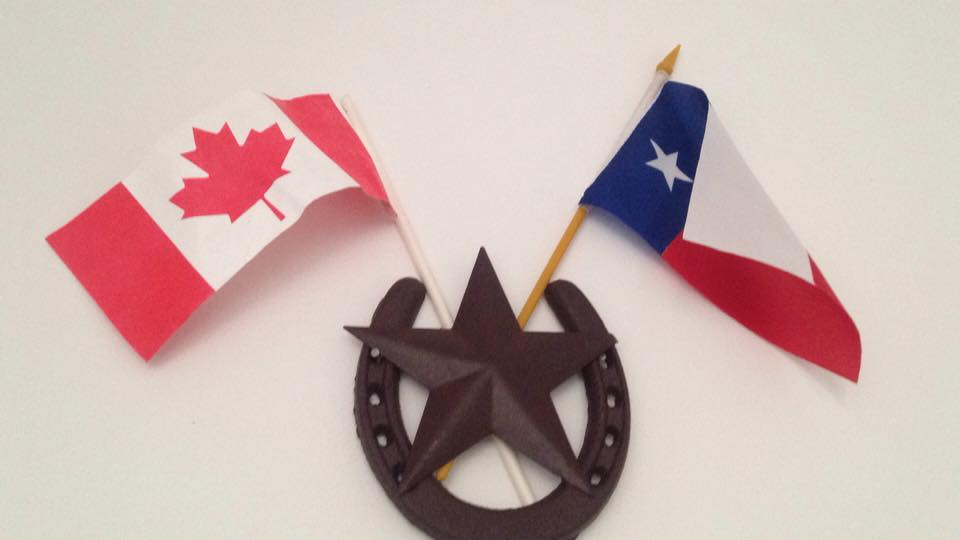

Hi, my name is Risa.
My passion is for programming, specifically frontend design and development. This website is a version of my normal working resume that is more interactive and used to practice some of the skills I have picked up over the years.
About Me
I originally hail from Austin, TX, in the USA. In 2007, I moved with my family to Vancouver, British Columbia in Canada. I attended the University of British Columbia from 2008 to 2015, earning two Bachelors Degrees: one in Psychology and one in Computer Science. During the course of my studies in Computer Science, I did Co-operative Education (internships with software companies full-time). Near the end of my second degree, I moved to Mannheim, Germany. I now live in Heidelberg, Germany and I work full-lifetime with a business software company while learning German on the side.
I am a big fan of video games, movies, and music in general. A combination of a desire to produce my own video game titles and an interest in directing/ special effects work in movies led me to ultimately pursue a second degree in Computer Science (although neither possibility has worked out so far - hey, I can dream, right?). I also love to travel, and I am proud to be both an American and a Canadian citizen. I hope to explore many more new places in my lifetime.
Work experience
-
Frontend Developer, UEBERBIT GmbH
Mannheim, DE - January 2016 to Present
I am currently a Front-End Developer at Ueberbit GmbH. I bring visual designs of websites to life for various German companies Ueberbit has partnered with. I work primarily with Drupal 8, TYPO3, HTML5, CSS3, SASS, Foundation, and occasionally C Sharp.
-
Crowd Requirements Engineering Praktikant, Fraunhofer IESE
Kaiserslautern, DE - July 2015 to December 2015
Designed a GUI for a crowd-based requirements engineering tool being developed by the UX/RE team using Bootstrap, AngularJS, and BreezeJS.
-
Software Developer in Test, SAP SE
Vancouver, CA - January 2014 to August 2014
Tested install cases on legacy SAP software. Learned about Agile development, coding in Python, and quality assurance practices in software.
Education
-
Bachelor of Computer Science (Integrated Computer Science) with Co-operative Education
University of British Columbia - September 2012 to November 2015
A two-year second Bachelor’s degree program with a focus on software development, human-computer interaction, algorithms, integration of Computer Science and Psychology, and the application of such skills in a career.
-
Bachelor of Arts, Major in Psychology
University of British Columbia — September 2008 to May 2012
A four-year Bachelor’s degree program with emphasis on understanding the many aspects of the field of Psychology and their relation to other academic disciplines. Focused on social, developmental, and abnormal psychology.